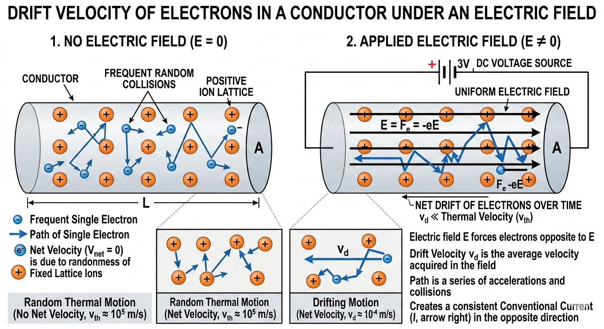
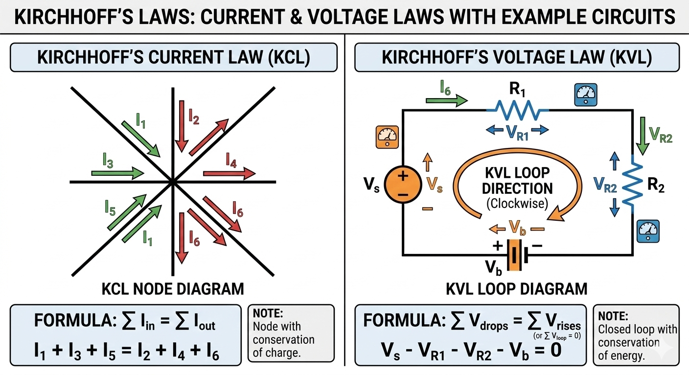
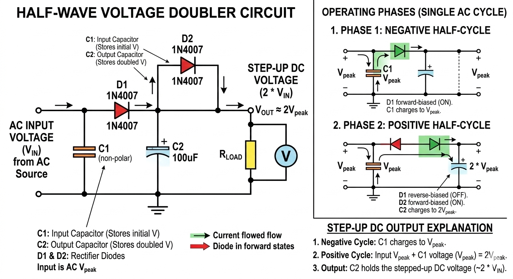

Introduction to Current Electricity
Electric current is the rate of flow of electric charge through a conductor. In metallic conductors, free electrons are the charge carriers. The SI unit of current is ampere (A), defined as one coulomb of charge passing through a cross-section per second.
Current electricity forms the foundation of almost all modern technology — from household wiring to complex electronic circuits. In this chapter we explore the microscopic picture (drift velocity), macroscopic laws (Ohm’s law, Kirchhoff’s laws), and practical voltage-stepping techniques used in real devices.

Drift Velocity – The Microscopic Picture
When an electric field \( \mathbf{E} \) is applied across a conductor, free electrons experience a force \( \mathbf{F} = -e\mathbf{E} \). They accelerate but frequently collide with lattice ions, losing momentum. The average velocity gained between collisions is called drift velocity \( v_d \).
\[ v_d = \frac{eE\tau}{m} \]
where \( e \) = charge of electron, \( E \) = electric field, \( \tau \) = relaxation time (average time between collisions), \( m \) = mass of electron.
The current \( I \) through a wire of cross-section area \( A \) and electron density \( n \) is then:
\[ I = neAv_d \]
This relation beautifully connects microscopic motion to the measurable current. Typical drift velocity in copper wires is only ~0.1 mm/s even at high currents — electrons drift very slowly, but the electric field propagates almost at speed of light.
Voltage Drops and Ohm’s Law
Potential difference (voltage) across a resistor causes a drop \( V = IR \). In series circuits, total voltage is sum of individual drops. This is crucial for designing safe circuits and understanding power dissipation \( P = I^2R = V^2/R \).
Resistance \( R \) depends on material resistivity \( \rho \), length \( l \), and area \( A \):
\[ R = \frac{\rho l}{A} \]
Kirchhoff’s Laws – Conservation Principles

Kirchhoff’s Current Law (KCL)
At any junction, the algebraic sum of currents is zero:
\[ \sum I_{\text{in}} = \sum I_{\text{out}} \quad \text{or} \quad \sum I = 0 \]
This follows from conservation of charge — charge cannot accumulate at a junction.
Kirchhoff’s Voltage Law (KVL)
The algebraic sum of potential differences around any closed loop is zero:
\[ \sum V = 0 \]
This is conservation of energy — total work done by the field in a loop is zero. KVL is used to solve complex circuits with multiple loops and cells.
Practical Application: Stepping Up 1.5 V Cell Using Diodes

A standard 1.5 V alkaline cell cannot directly drive most LEDs (forward voltage ~2–3.2 V) or small DC motors. Using a diode-capacitor voltage doubler (or Villard cascade), we can step up the voltage.
The circuit works by charging capacitors in parallel during one half-cycle and discharging them in series during the other, effectively doubling the peak voltage minus diode drops (~0.7 V each). In practice, a 555 timer IC or mechanical switch creates the necessary oscillation from the DC cell.
Calculation: Current Required from 1.5 V Cell
Target: 3.2 V output at 500 mA (0.5 A) to run LEDs + DC motors in series.
Output Power
\[ P_{\text{out}} = V_{\text{out}} \times I_{\text{out}} = 3.2 \times 0.5 = 1.6 \, \text{W} \]
Real circuits have losses: diode forward drops (~1.4 V total), capacitor ESR, and conversion efficiency ~75–85 %. Assuming conservative 80 % efficiency:
Input Power Required
\[ P_{\text{in}} = \frac{P_{\text{out}}}{\eta} = \frac{1.6}{0.8} = 2 \, \text{W} \]
Current Drawn from 1.5 V Cell
\[ I_{\text{in}} = \frac{P_{\text{in}}}{V_{\text{in}}} = \frac{2}{1.5} \approx 1.33 \, \text{A} \]
Conclusion: The 1.5 V cell must supply ~1.33 A. Use a high-capacity AA/AAA cell or parallel cells. In voltage doubler, input current is roughly twice the output current due to charge-pumping action, which matches our result closely.